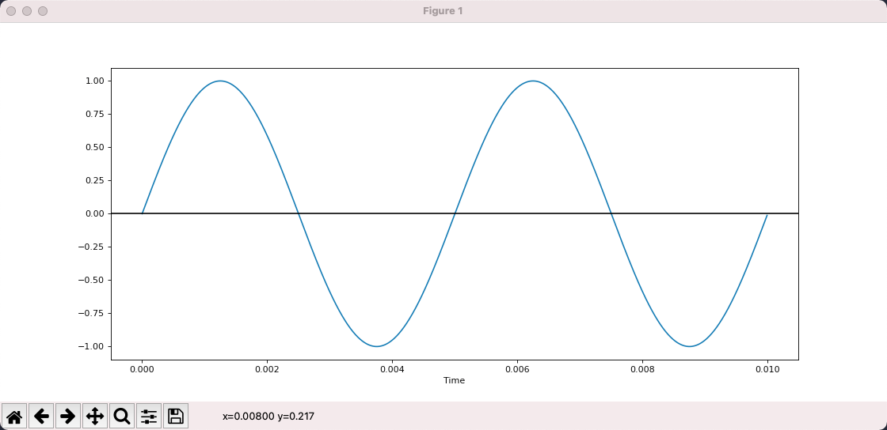
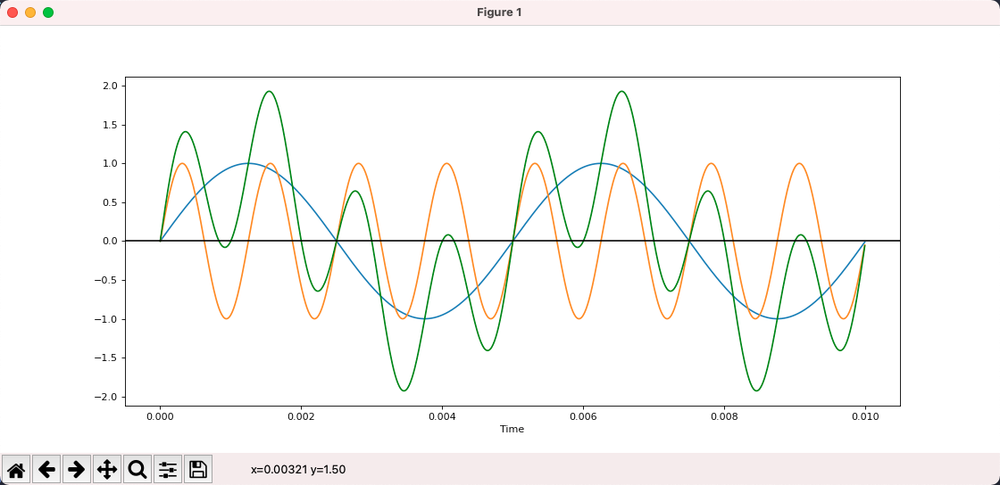
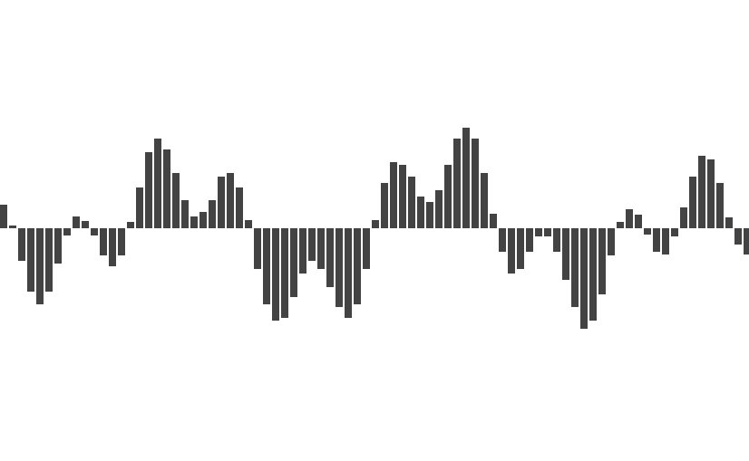
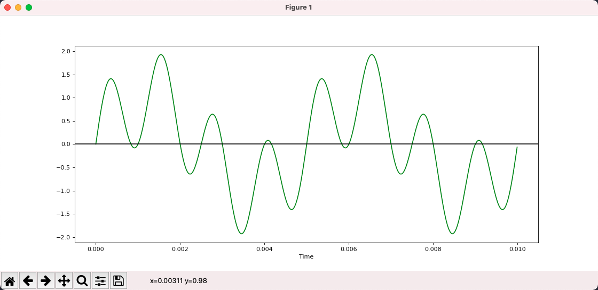
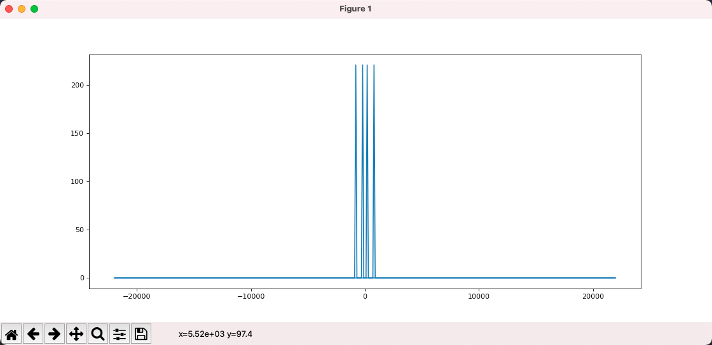

Technical Solution for Audio visualization
Waves
-
Sound is produced by the vibration of an object, and this vibration is transmitted through a medium to our ears causing the eardrum to vibrate so that we can hear the sound.
-
We can describe vibration in terms of a waveform, where the horizontal axis is time and the vertical axis is the displacement of the vibration, i.e., the distance from the origin.
-
The two key properties of vibration are frequency and amplitude. Frequency refers to how many times a second it vibrates, which corresponds to the pitch of the sound, the higher the frequency the sharper and harsher the sound.
-
Amplitude is the maximum displacement value, which corresponds to the volume, the greater the amplitude, the louder the sound.
The above figure is a sine wave plotted with matplot, which shows that it oscillates 2 times in 0.01s, so the frequency is 200 and the amplitude is 1.
from matplotlib import pyplot as plt
import numpy as np
def sin_wave(hz):
x = np.linspace(0, 0.01, 1000, endpoint=False)
y = np.sin(x * hz * 2 * np.pi)
plt.plot(x, y)
plt.xlabel("Time")
plt.axhline(y=0, color='k')
plt.show()
sin_wave(200)
This simplest waveform corresponds to a sound called pure tone, which, as the name suggests, is very simple and pure.
- Here is a 200hz sound generated with scipy.
- This is the sound at 800hz, and you can clearly feel that the sound is much sharper.
-
The sound we hear in the real world is not a pure tone, but the result of superimposing various pure tones.
In the picture below, blue is 200hz, yellow is 800hz, and green is the result of their superposition and is no longer a pure tone.

- To summarize.
We can represent a sound as a waveform, where the X-axis is time and the Y-axis is the displacement of the vibration
The simplest sine wave corresponds to a sound called pure tone
The sounds we hear in daily life are the result of superposition of various pure tones
Tip:
LIGHTNOTE is great website to learn music theory. It introduces basic music theory in an interactive format, including scales, chords, twelve mean meters, etc.
Sampling
-
Because sound is a continuous function over time, there are an infinite number of values in any given interval, and there is no way to store an infinite amount of data in a computer.
-
To store it, we need to discretize it into a discrete sequence, and the specific way to do this is to sample it, using a fixed interval to evaluate the function.
-
This is the original sound.
-
This is the result after sampling.
 -
By sampling, we turn an endless sequence into a finite sequence where each value is called a sample so that it can be easily stored in the computer.
-
There are two key parameters of sampling, which are sampling frequency and sampling depth.
-
Sampling frequency refers to how many times per second a sample is taken. Obviously, the higher the sampling frequency, the more samples, the larger the amount of data, and also the closer to the original sound.
-
Sampling depth refers to how many bits are used to store the sampled values, the more bits are used, the more detailed the restored sound is, and the color depth of the picture is the same reason.
-
Suppose we use a sampling depth of 16bit and a sampling frequency of 44100, then a one-second sound becomes an int16 array of 44100.
-
After we get the array of sample values, how to store the array is the domain of encoding. We can store it directly, or we can use some algorithm to compress it and store it later. There are various ways to do this, corresponding to various audio formats, such as MP3, AAC, WAV, and so on.
-
The AAC and MP3 formats are lossy, which means that when stored and then read out, there will be some differences between the samples and the original, but these differences are subtle and can be ignored. The characteristic of lossy is to reduce the file size significantly without affecting the final playback effect.
-
WAV, on the other hand, is lossless in the sense that whatever is input is what is read out, but naturally the disadvantage is that it is much larger.
-
We can read WAV audio through scipy.
import scipy.io.wavfile as wav
rate, all_samples = wav.read("xxx.wav")
print(rate, len(all_samples), all_samples.dtype)
# 44100 10639873 int16
# Above are: the sample rate, the total number of samples, and the type of sample value
# int16 means that each sample is a 16bit integer
print(all_samples[:20])
# [-41 -51 -49 -41 -28 -15 -20 -33 -32 -38 -54 -54 -44 -30 -8 10 11 2
# -14 -36]
# the sample is a set of numbers
As we can see, the sampling frequency is 44100 and there are 10639873 samples, which are stored using int16.
Fourier Transform
- Given a 200hz waveform and an 800hz waveform, calculating the result after superimposing them is very simple.
- But what if the result is given after superposition?

With the Fourier transform, we can disassemble a composite waveform into the simple waveforms that make it up.
We can think of the Fourier transform as a function whose input is N real numbers, representing sampled values, and whose output is N complex numbers, representing components at different frequencies. Here we ignore the real and imaginary parts of the complex numbers and only care about its mode, i.e., the absolute value.
from scipy.fft import fft, fftfreq
# This is the sample value that will be transformed: [0, 1, 2, 3, 4, 5, 6, 7]
samples = np.arange(8)
# The result after FFT
y = fft(samples)
for i in y:
print(i)
# The result of the transformation is 8 complex numbers
# (28-0j)
# (-3.9999999999999996+9.65685424949238j)
# (-4+4j)
# (-4+1.6568542494923797j)
# (-4-0j)
# (-4-1.6568542494923797j)
# (-4-4j)
# (-3.9999999999999996-9.65685424949238j)
# x is the frequency corresponding to each of the above results
# Here the first argument of the fftfreq function is the number of samples
# The second parameter is the inverse of the sampling rate, which we assume to be 8
x = fftfreq(len(samples), 1 / 8)
print(x)
# [ 0. 1. 2. 3. -4. -3. -2. -1.]
# Here it means that y[0] corresponds to a frequency of 0 and y[1] corresponds to a frequency of 1
# What does it mean to have a negative frequency? [ignore]
The above code constructs a Fourier transform of 8 numbers and assumes that the set of samples is sampled using a sampling rate of 8.
The result of the transform is 8 complex numbers, which correspond to 8 frequencies, and we can see that the positive and negative frequencies correspond to the same transform result, i.e. the transform result is symmetric.
The result obtained above is not very meaningful, because the input is not very meaningful. Now let's use the Fourier transform to process the waveform after the 200hz+800hz superposition and see if it can be restored to 200hz and 800hz.
import numpy as np
from matplotlib import pyplot as plt
from matplotlib.pyplot import figure
from scipy.fft import fft, fftfreq
figure(figsize=(14, 6), dpi=80)
DURATION = 0.01
SAMPLE_RATE = 44100
def gen_sine_wave(freq):
x = np.linspace(0, DURATION, int(DURATION * SAMPLE_RATE), endpoint=False)
y = np.sin(x * freq * 2 * np.pi)
return y
hz200 = gen_sine_wave(200)
hz800 = gen_sine_wave(800)
# ampling data after superposition
# Here each sample is not int16 but float
total = hz200 + hz800
y = fft(total)
x = fftfreq(len(total), 1 / SAMPLE_RATE)
plt.plot(x, np.abs(y))
plt.show()
As we can see in the figure, firstly, the output is symmetrical to the left and right, so we ignore the negative frequencies and focus only on the positive ones.
Secondly, the Fourier transform tells us that the input signal consists of 2 frequencies, which can be seen as 200 and 800 when the program is running with the mouse over it. i.e., by using the Fourier transform, we break up the composite waveform into a simple waveform.
Or, by Fourier transforming a signal, we split it into a set of sine waves of different frequencies, transforming it from the time domain to the frequency domain. The signal is still the same signal, but we look at it from a different perspective.

- To summarize.
The Fourier transform is a function in which the input string of numbers represents the sample values and the output string of complex numbers represents the frequency components
The specific frequency of each number can be calculated based on the number of samples and sampling frequency
We do not care about the direction of the complex numbers, we only care about the mode of the complex numbers
The Fourier output is left-right symmetric, so only half of the information is of value
Since the output is symmetric, only half of the information has value, so there is a variant called rfft, which returns only half of the information and can be computed faster.
import numpy as np
from scipy.fft import rfft, rfftfreq
SAMPLE_RATE = 8
samples = np.arange(8)
y = rfft(samples)
x = rfftfreq(len(samples), 1 / SAMPLE_RATE)
print(x)
# [0. 1. 2. 3. 4.]
for i in y:
print(i)
# Comparing with the previous output of fft/fftfreq, the results are the same, except that the symmetric redundancy information is removed
# (28+0j)
# (-3.9999999999999996+9.65685424949238j)
# (-4+4j)
# (-4+1.6568542494923797j)
# (-4+0j)
Audio visualization
Each bar that beats with the music corresponds to a frequency or a set of frequencies, while the height of the bar is the component size of the frequency, both of which are given by the Fourier transform.
Now the remaining question is what is the input? We can't take all the samples of a song as input to the Fourier transform, if we did that we would only get one copy of the frequency data.
We want the frequency data to change with the music, so we choose a window size (FFT_SIZE) of, say, 2048. As the music plays, we select 2048 samples from the current playing position each time and then perform the Fourier transform.
- Now our initial audio visualization scheme is defined.
- Parse the audio file to get allSamples
- In each plot, select FFT_SIZE samples starting from the current sample
- Perform Fourier transform on these samples
- Modulate the complex numbers obtained from the transform
- Transform the result to 0 ~ 1 and plot it
- Next, let's implement a simple audio visualization tool using the Web.
1，First, parsing the audio file to get allSamples we can use the WebAudio API.
// Get the binary data of an audio file
const ab = fetch("xxx.mp3").then(res => res.arrayBuffer())
// New WebAudio context
const audioCtx = new AudioContext()
// Parse arrayBuffer
const audioBuffer = audioCtx.decodeAudioData(ab)
console.log(audioBuffer)
// AudioBuffer {length: 10639872, duration: 241.2669387755102, sampleRate: 44100, numberOfChannels: 2}
// duration: 241.2669387755102
// length: 10639872
// numberOfChannels: 2
// sampleRate: 44100
// [[Prototype]]: AudioBuffer
// Generally audio is available in multiple channels for stereo playback
// Here we simplified the question by select the first channel
const allSamples = audioBuffer.getChannelData(0)
// allSamplesis the array of samples we want, each sample value is a float number
console.log(allSamples.slice(0, 10))
// Float32Array(10) [0, 0, 0, 0, 0, 0, 0, 0, 0, 0]
2，Next, we use requestAnimationFrame to draw.
Each time we draw, we need to get the current playback position. audioBuffer has the total time of the audio, through audioCtx.currentTime we can find out the current playback time, and divide the two together to get the playback position.
// On User Click
const onPlay = () => {
// Record the start time
const startTime = audioCtx.currentTime
const draw = () => {
requestAnimationFrame(draw)how long have been played
// the playing time (in seconds)
const cur = audioCtx.currentTime - startTime
// the percentage of playing progress
const per = cur / audioBuffer.duration
const startIndex = Math.floor(allSamples.length * per)
// From startIndex get FFT_SIZE samples which are to be Fourier transformed
const samples = allSamples.slice(startIndex, startIndex + FFT_SIZE)
}
requestAnimationFrame(draw)
}
3，After FFT, we get 1025 complex numbers, and modulo these complex numbers, we get 1025 real numbers.
// Define Complex Class
class Complex {
constructor(real, imag) {
this.real = real
this.imag = imag
}
abs() {
return Math.sqrt(this.real * this.real + this.imag * this.imag)
}
}
const rfft = (samples) => {
const f = new FFTJS(samples.length)
const out = f.createComplexArray()
const N = samples.length / 2 + 1
f.realTransform(out, samples)
const value = []
for(let i = 0; i < N; i++) {
value[i] = new Complex(out[2*i+0], out[2*i+1])
}
return value
}
// We get a set of real nums.
const y = rfft(samples).map(c => c.abs())
4，The next step is to map these numbers to the 0 ~ 1 interval.
const result = y.map(v => (v + 20) / 80)
5. Once we have a set of numbers from 0 to 1, we can use Canvas to draw.
const W = 800 // canvas width
const H = 600 // canvas height
const draw = (spectrum) => {
ctx.clearRect(0, 0, W, H)
const barWidth = W / spectrum.length
for(let i = 0; i < spectrum.length; i++) {
const v = spectrum[i]
const x = i * barWidth
const height = v * H
const y = H - height
ctx.fillRect(x, y, barWidth, height)
}
}
Copyright © 2015 Powered by MWeb, Theme used GitHub CSS.